第8章
通过流体传播的运动
命题41 定理32
只有在流体粒子沿直线排列的地方，通过流体传播的压力才会沿着直线方向。
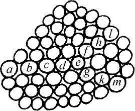
如果粒子a ，b ，c ，d ，e 沿一条直线排列，压力的确可以由a 沿直线传播到e ；但此后粒子e 将斜向推动斜向排列的粒子f 和g ，而粒子f 和g 除非得到位于其后的粒子h 和k 的支撑，否则无法忍受该传播过来的压力；但这些支撑着它们的粒子又受到它们的压力；这些粒子如果得不到位于更远的粒子l 和m 的支撑并对之传递压力的话，将也不能忍受这项压力，以此类推至于无限。所以，一旦压力传递给不沿直线排列的粒子，它将向两侧偏移，并斜向传播到无限；在压力开始斜向传递后，在到达更远的不沿直线排列的粒子时，会再次向两侧偏移直线方向；每当压力传播时遇到不是精确沿直线排列的粒子时，都发生这种情形。
证毕。
推论．如果压力的任何部分在流体中由一给定点传播时，遇到任意障碍物，则其余未受阻碍的部分将绕过该障碍物而进入其后的空间。
这也可以由以下方法加以证明。如果可能的话，令压力由点A沿直线方向向任意一侧传播；障碍物NBCK在BC处开孔，令所有压力受到阻挡，唯有其圆锥形部分APQ通过圆孔BC。令圆锥体APQ为横截面de ，fg ，hi 分割为平截头体。当传播压力的锥体ABC在de 而推动位于其后的平截头锥体degf 时，该平截头锥体又在fg 面推动其后的平截头锥体fgih ，而该平截头锥体又推动第三个平截头锥体，以至于无限；这样，（由第三定律）当第一个平截头锥体degf 推动并压迫第二个平截头锥体时，由于第二个平截头锥体fgih 的反作用，它在fg 面也受到同样大小的推动和压力。所以平截头锥体defg 受到来自两方面，即受到锥体Ade 与平截头锥体fhig 的压迫；因而（由命题19情形6）不能保守其形状，除非它受到来自所有方面的相等压力。所以，它向df ，eg 两侧扩展的力，等于它在de ，fg 面上所受到的压力；而在这两侧（没有任何粘滞性与硬度，具有完全流动性）如果没有周围的流体抵抗这种扩展力，则它将向外膨胀。所以，它在df ，eg 两边以与压迫平截头锥体fgih 相等的力压迫周围流体；因此，压力由边df ，eg 向两侧传播入空间NO和KL，其大小与由fg 面传播向PQ的压力相同。
证毕。
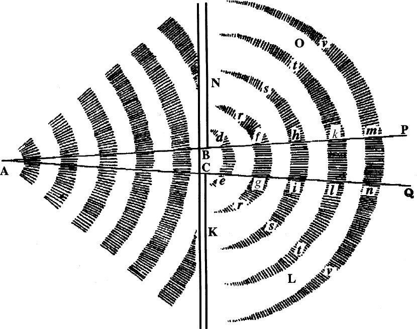
命题42 定理33
在流体中传播的运动自直线路径扩散而进入静止空间。
情形1．令运动由点A通过孔BC传播，如果可能的话，令它在圆锥空间中沿自点A扩散的直线传播。先来设这种运动是在静止水面上的波；令de ，fg ，hi ，kl 等为各水波的顶点，相互间由同样多的波谷或凹处隔开。因波脊处的水高于流体KL，NO的静止部分，它将由这些波脊顶部e ，g ，i ，l 等等及d ，f ，h ，k 等等从两侧向着KL和NO流下；而因为在波谷的水低于流体KL，NO的静止部分，这些静止水将流向波谷。在第一种流体中波脊向两侧扩大，向KL和NO传播。因为由A向PQ的波运动是由波脊连续流向紧挨着它们的波谷带动的，因而不可能快于向下流动的速度；而两侧向KL和NO流下的水必定也以相同速度行进：因此，水波向KL和NO两边的传播速度，等于它们由A直接传播向PQ的速度。所以指向KL和NO两侧的整个空间中将充满膨胀波rfgr ，shis ，tklt ，vmnv ，等等。
证毕。
任何人都可以在静止水面上以实验证明这一情形。
情形2．设de ，fg ，hi ，kl ，mn 表示在弹性介质中由点A相继向外传播的脉冲。设脉冲是通过介质的相继压缩与舒张实验传播的，每个脉冲密度最大的部分呈球面分布，球心为A，相邻脉冲的间隔相等。令直线de ，fg ，hi ，kl 等等表示通过孔BC传播的脉冲的最大密度的部分；因为这里的介质密度大于指向KL和NO两侧的空间，介质将与向脉冲之间的稀薄间隔扩充一样也向指向KL和NO两个方向的空间扩展；因此，介质总是在脉冲处密集，而在间隔处稀疏，进而参与脉冲运动。而因为脉冲运动的传播是由介质的密集部分向毗邻的稀薄间隔连续舒张引起的；由于脉冲沿两侧向介质的静止部分KL和NO以近似的速度舒张；所以脉冲自身向所有方向膨胀而进入静止部分KL和NO，其速度几乎与由中心A直接向外传播相同，所以将充满整个空间KLON。
证毕。
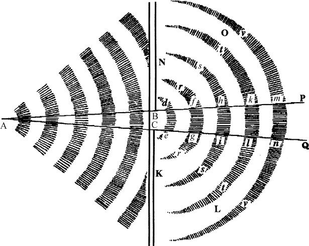
这也可以由实验证明，我们能隔着山峰听到声音，而且，如果这声音通过窗户进入室内，扩散到屋内的所有部分，则可以在每一个角落听到；这不是由对面墙壁反射回来的，而是由窗户直接传入的，可以由我们的感官判明。
情形3．最后，设任意一种运动自A通过孔BC传播。由于这种运动传播的原因是邻近中心A的介质部分扰动并压迫较远的介质部分所造成的；而且由于被压迫的部分是流体，因而运动沿所有方向向受压迫较小的空间扩散：它们将由于随后的扩散而传向静止介质的所有部分，在指向KL和NO两个方向上与先前指向直线方向PQ的相同；由此，所有的运动，一旦它通过孔BC，将开始自行扩散，并将与在其源头与中心一样，由此直接向所有方向传播。
证毕。
命题43 定理34
每个在弹性介质中颤动的物体都沿直线向所有方向传播其脉冲；而在非弹性介质中，则激发出圆运动。
情形1．颤动物体的各部分，交替地前后运动，在向前运动时压迫并驱使最靠近其前面的介质部分，并通过脉冲使之紧缩密集；在向后运动时则又使这些紧缩的介质重又舒张，发生膨胀。因此靠着颤动物体的介质部分也往复运动，其方式与颤动物体的各部分相同；而由与该物体的各部分推动介质相同的原因，介质中受到类似颤动推动的部分也转而推动靠近它们的其他介质部分，这些其他部分又以相似方式推动更远的部分，直至无限。与第一部分介质在向前时被压缩，在向后时又被舒张方式相同，介质的其他部分也在向前时被压缩，向后时膨胀。所以它们并不总是在一瞬间里同时向前或向后运动（因为如果是这样的话它们将维持相互间的既定距离，不可能发生交替的压缩和舒张）；而由于在被压缩的地方相互趋近，舒张的地方相互远离，所以当它们一部分向前运动时另一部分则向后运动，以至于无限。这种向前的运动产生压缩作用，就是脉冲，因为它们在传播运动中会冲击阻挡前面的障碍物；因而颤动物体随后所产生的脉冲将沿直线方向传播；而且由于各次颤动间隔的时间是相等的，在传播过程中又在近似相等的距离上形成不同脉冲。虽然颤动物体各部分的往复运动是沿固定而确定的方向进行的，但由前述命题，颤动在介质中引起的脉冲却是向所有方向扩展的；并将自颤动物体像颤动的手指在水面激起的水波那样，沿共心的近似球面向所有方向传播，水波不仅随着手指的运动而前后推移，还沿环绕着手指的共心圆向四面八方传播。因为水的重力起到了弹性力的作用。
情形2．如果介质是非弹性的，则由于其各部分不能因颤动物体的振动部分所产生的压力而压缩，运动将即时地向着介质中最易于屈服的部分传播，即向着颤动物体所留下空洞的部分传播。这种情形与抛体在任意介质中的运动相同。屈服于抛体的介质不向无限远处移动，而是以圆运动绕向抛体后部的空间。所以一旦颤动物体移向某一部分，屈服于它的介质即以圆运动趋向它留下的空洞部分；而且物体回到其原先位置时，介质又被它从该位置逐开，回到自己原先的位置。虽然颤动物体并不牢固坚硬，而是十分柔软的，尽管它不能通过其颤动而推动不屈服于它的介质，却仍能维持其给定的大小，则离开物体受压部分的介质总是以圆运动绕向屈服于它的部分。
证毕。
推论．因此，那种认为火焰通过周围介质沿直线方向传播其压力的看法是错误的。这种压力不可能只来自火焰部分的推力，而是来自整体的扩散。
命题44 定理35
在管道或水管中，如果水交替地沿竖直管子KL，MN上升和下降；一只摆，其在悬挂点与摆动中心之间的摆长等于水在管道中长度的一半，则水的上升与下落时间与摆的摆动时间相等。
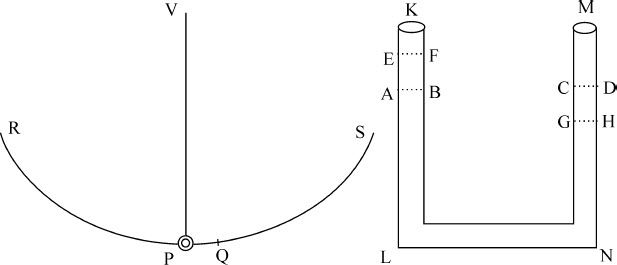
我沿管道及其竖直管子的轴测出水的长度，并使之等于这些轴长的和；水摩擦管壁所引起的阻力忽略不计。所以，令AB，CD表示竖直管子中水的平均高度；当水在管子KL中上升到高度EF时，在管子MN中的水将下降到高度GH。令P为摆体，VP为悬线，V为悬挂点，RPQS为摆掠过的摆线，P为其最低点，PQ为等于高度AE的一段弧长。使水的运动交替加速和变慢的力，等于一只管子中水的重量减去另一只管子中水的重量；因此，当管子KL中的水上升到EF时，另一只管子中的水下降到GH，上述力是水EABF的重量的二倍，因而水的总重量等于AE或PQ比VP或PR。而使物体P在摆线上任意位置Q加速或变慢的力，（由第一编命题51推论）比其总重量等于它到最低点P的距离PQ比摆线长PR。所以，掠过相等距离AE，PQ的水和摆的运动力，正比于被运动的重量；所以，如果开始时水和摆是静止的，则这些力将使它们作等时运动，并且是共同往返的交替运动。
证毕。
推论Ⅰ．水升降往复总是在相等时间内进行的，不论这种运动是强烈或微弱。
推论Ⅱ．如果管道中水的总长度为
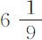
尺（法国单位），则水下降时间为一秒，而上升时间也为一秒，循环往复以至于无限；因为在该计量单位下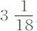
尺长的摆的摆动时间为1秒。推论Ⅲ．如果水的长度增大或减小，则往复时间正比于长度比的平方根增加或缩短。
命题45 定理36
波速的变化正比于波宽 (1) 的平方根。
这可以从下一个命题得到证明。
命题46 问题10
求波速。
做一只摆，其悬挂点与摆动中心间距等于波的宽度，在摆完成一次摆动的时间内，波前进的距离约等于其波宽。
我所谓的波宽，指横截面上波谷的最深处的间距，或波脊顶部的间距。令ABCDEF表示在静止水面上相继起伏的波；令A，C，E等为波峰；B，D，F等为间隔的波谷。因为波运动是由水的相继起伏实现的，所以其中的A，C，E等点在某一时刻是最高点，随后即变为最低点；而使最高点下降或最低点上升的运动力，正是被抬起的水的重量，因此这种交替起伏类似于管道中水的往复运动，因而遵从相同的上升和下降的时间规律；所以（由命题44），如果波的最高点A，C，E和最低点B，D，F的间距等于任意摆长的二倍，则最高点A，C，E将在一次摆动时间内变为最低点，而另一次摆动时间内又升到最高点。所以每通过一个波，摆将发生两次摆动；即，波在二次摆动的时间里掠过其宽度；但对于四倍于该长度的摆，其摆长等于波宽，则在该时间内摆动一次。
完毕。
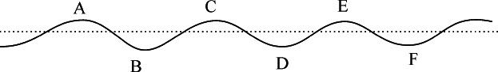
推论Ⅰ．波宽等于
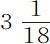
法国尺，则波在一秒时间内通过其波宽的距离；因此一分钟内将推进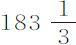
尺的距离；而一小时约为11,000尺。推论Ⅱ．大的或小的波，其速度正比于波宽的平方根而增大或减小。
上述结论以水各部分沿直线起伏为前提；但实际上，这种起伏更表现为圆；所以我在本命题中给出的时间只是近似值。
命题47 定理37
如果脉冲在流体中传播，则作交替最短往复运动的流体粒子，总是按摆动规律被加速或减速。
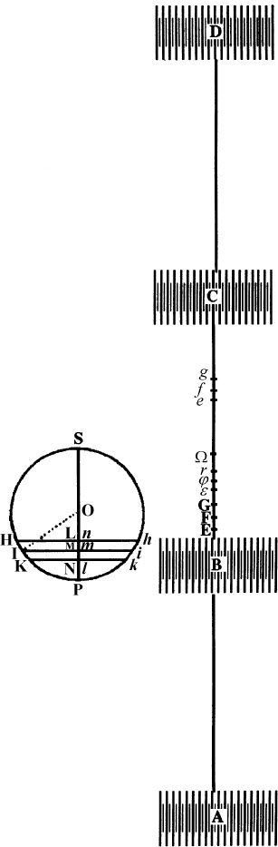
令AB，BC，CD等表示相继脉冲的相等距离；ABC为相继脉冲由A传播到B的直线运动方向；E，F，G为直线AC上静止介质的三个间距相等的物理点；Ee ，Ff ，Gg 为三个极小的相等距离，上述三点在每次振动中交替往返于其间；ε ，φ ，γ 为相同点的任意中间位置；EF，FG为物理短线，或这些点与随后移入的处所εφ ，φγ 和ef ，fg 之间的介质的线性部分，作直线PS等于直线Ee 。在O点将它二等分，并以O为圆心，OP为半径作圆SIPi 。令一次振动的总时间，及其成正比的部分，这样来由该圆的周长及其成正比的部分表示。使得当任意时间PH或PHsh 结束时，如果作HL或hl 垂直于PS，并取Eε 等于PL和Pl ，则物理点E位于ε。这样,按该规律作往复运动的点E,在由E经过ε 到e ，再通过ε回到E的过程中，将在一次摆动时间内完成一次振动，而且加速与减速程度相同。我们现在要证明介质的不同物理点会受到这种运动的推动。那么，让我们设一种介质中有这样一种受激于任意原因的运动，看看会发生什么情况。
在圆PHSh 上取相等的弧HI，IK，或hi ，ik ，它们与圆周长的比，等于直线EF，FG比整个脉冲间隔BC，作垂线IM，KN，或im ，kn ；因为点E，F，G受到相继的推动作相似运动，在脉冲由B移动到C的同时，它们完成一次往复振动；如果PH或PHSh 为E点开始运动后的时间，则PI或PHSi 为点F开始运动以后的时间，而PK或PHSk 为点G开始运动以后的时间；所以，当点前移时Eε ，Fφ ，Gγ 分别等于PL，PM，PN，而当点返回时，又分别等于Pl ，Pm ，Pn 。所以，当点前移时，εγ 或EG＋Gγ －Ee 等于EG－LN，而当它们返回时，则等于EG＋ln 。但εγ 是处所εγ 的介质宽度或EG部分的膨胀；因而在前移时该部分的膨胀比其平均膨胀等于EF－LN比EG；而在返回时，则等于EG＋ln 或EG＋LN比EG。所以，由于LN比KH等于IM比半径OP，而KH比EG等于周长PHSh P比BC；即如果以V代表周长等于脉冲间隔BC的圆的半径，则上述比等于OP比V；将比例式对应项相乘，得到LN比EG等于IM比V；EG部分的膨胀，或位于处所εγ 的物理点F的伸展范围，比其在原先处所EG相同部分的平均膨胀，在前移时等于V－IM，而在返回时等于V＋im 比V。因此，点F在处所εγ 的弹性力比其在处所EG的平均弹性力，在前移时等于
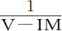
比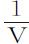
，而在返回时等于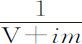
比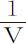
。由相同理由，物理点E和G与平均弹性力的比，在前移时等于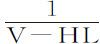
和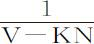
比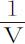
；力的差与介质平均弹性力的比等于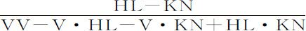
比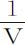
；即，等于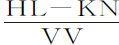
比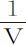
，或等于HL－KN比V；如果我们设（因为振动范围极小）HL和KN无限小于量V的话。所以，由于量V是给定的，力差正比于HL—KN；即（因为HL—KN正比于HK，而OM正比于OI或OP；HK和OP是给定的），正比于OM；即，如果在Ω二等分Ff ，则正比于Ωφ 。由相同的理由，物理点ε 和γ 上弹性的差，在物理短线εγ 返回时，正比于Ωφ 。而该差（即，点ε 的弹性超出点γ 的弹性力部分）。正是使其间的介质物理短线εγ 在前移时被加速，以及返回时被减速的力；所以物理短线εγ 的加速力正比于它到振动中间位置Ω的距离。所以（由第一编命题38）弧PI正确地表达了时间；而介质的线性部分εγ 则按照上述规律运动，即按照摆振动规律运动；这种情形，对于组成介质的所有线性部分都是相同的。证毕。
推论．由此可知，传播的脉冲数与颤动物体的振动次数相同，在传播过程中没有增加。因为物理短线εγ 一旦回到其原先位置即处于静止；在颤动物体的脉冲，或该物体传播而来的脉冲到达它之前，将不再运动。所以，一旦脉冲不再由颤动物体传播过来，它将回到静止状态，不再运动。
命题48 定理38
设流体的弹性力正比于其密度，则在弹性流体中传播的脉冲速度正比于弹性力的平方根，反比于密度的平方根。
情形1．如果介质是均匀的，介质中脉冲间距相等，但在一种介质中其运动强于在另一种介质中，则对应部分的收缩与舒张正比于该运动；不过这种正比关系不是十分精确。然而，如果收缩与舒张不是极大，则误差难以察觉；所以，该比例可认为是物理精确的。这样，弹性运动力正比于收缩与舒张；而相同时间内相等部分所产生的速度正比于该力。所以脉冲的相对的对应部分同时往返，通过的距离正比于其收缩与舒张，速度则正比于该空间；所以，脉冲在一次往返时间内前进的距离等于其宽度，并总是紧接着其前一个脉冲进入它所遗留的位置，所以，因为距离相等，脉冲在两种介质中以相等速度行进。
情形2．如果脉冲的距离或长度在一种介质中大于另一种介质，设对应的部分在每次往复运动中所掠过的距离正比于脉冲宽度；则它们的收缩和舒张是相等的；因而，如果介质是均匀的，则以往复运动推动它们的运动力也是相等的。现在这种介质受该力的推动正比于脉冲宽度；而它们每次往返所通过的距离比例也相同。而且，一次往返所用时间正比于介质的平方根与距离的平方根的乘积；所以正比于距离。而脉冲在一次往返的时间内所通过的距离等于其宽度；即，它们掠过的距离正比于时间，因而速度相同。
情形3．在密度与弹性力相等的介质中，所有脉冲速度相同。如果介质的密度或弹性力增大，则由于运动力与弹性力同比例增大，物质的运动与密度同比例增大，产生像从前一样的运动所需的时间正比于密度的平方根增大，却又正比于弹性力的平方根减小。所以脉冲的速度仍反比于介质密度的平方根，正比于弹性力的平方根。
证毕。
本命题可以在以下问题的求解中得到进一步澄清。
命题49 问题11
已知介质的密度和弹性力，求脉冲速度。
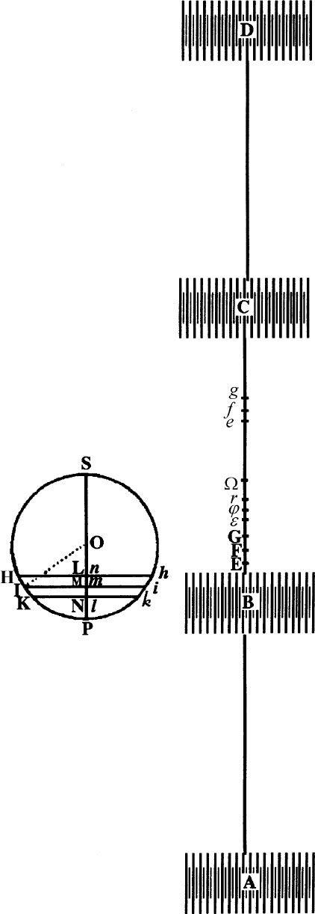
设介质像空气一样受到其上部的重量的压迫；令A为均匀介质的高度，其重量等于其上部的重量，密度与传播脉冲的压缩介质相同。做一只摆，自悬挂点到摆动中心的长度是A：在摆完成一次往复全摆动的时间内，脉冲行进的距离等于半径为A的圆周长。
因为，在命题47的作图和证明中，如果在每次振动中掠过距离PS的任意物理短线EF，在每次往返的端点P和S都受到等于其重量的弹性力的作用，则它的振动时间，与它在长度等于PS的摆线上摆动的时间相同；这是因为相等的力在相同或相等的时间内推动相等的物体通过相等的距离。所以，由于摆动时间正比于摆长的平方根，而摆长等于摆线的半弧长，一次振动的时间比长度为A的摆的摆动时间，等于长度
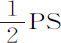
或PO与长度A的比的平方根。但推动物理短线EG的弹性力，当它位于端点P，S时，（在命题47的证明中）比其弹性力，等于HL－KN比V，即（由于这时K落在P上），等于HK比V；所有的这种力，或等价地，压迫短线EG的上部重量，比短线的重量，等于上部重量的高度比短线的长度EG；所以，取对应项的乘积，则使短线EG在点P和S受到作用的力比该短线的重量等于HK·A比V·EG；或等于PO·A比VV；因为HK比EG等于PO比V。所以，由于推动相等的物体通过相等的距离所需的时间反比于力的平方根，受弹性力作用而产生的振动时间，比受重量冲击而产生的振动时间，等于VV与PO·A的比的平方根，而比长度为A的摆的摆动时间，等于VV与PO·A的比的平方根，与PO与A的比的平方根的乘积；即，等于V比A。而在摆的一次往复摆动中，脉冲行进的空间等于其宽度BC。所以脉冲通距离BC的时间比摆的一次往复摆动时间等于V比A，即等于BC比半径为A的圆周长。但脉冲通过距离BC的时间比它通过等于该圆周的长度也为相同比值，所以在这样的一次摆动时间内，脉冲行进的长度等于该圆周长。证毕。
推论Ⅰ．脉冲的速度等于，一个重物体在相同加速运动的下落中，落下高度A的一半时所获得的速度。因为如果脉冲以该下落获得的速度行进，则在该下落时间内，掠过的距离等于整个高度A；所以，在一次往复摆动中，脉冲行进的距离等于半径为A的圆周长；因为下落时间比摆动时间等于圆半径比其周长
推论Ⅱ．由于高度A正比于流体的弹性力，反比于其密度，脉冲速度反比于密度的平方根，正比于弹性力的平方根。
命题50 问题12
求脉冲距离。
在任意给定时间内，求出产生脉冲的颤动物体的振动次数。以该数除在相同时间内脉冲所通过的距离，得到的商即一个脉冲的宽度。
完毕。
附注
上述几个命题适用于光和声音的运动；因为光是沿直线传播的，它当然不能只包括一个孤立的作用（由命题41和42）。至于声音，由于它们是由颤动物体产生的，无非是在空气中传播的空气脉冲；这可以通过响亮而低沉的声音激励附近的物体震颤得到证实，像我们听鼓声所体验的那样；因为快速而短促的颤动不易于激发。而众所周知的事实是，声音落在绷在发声物体上的同音弦上时，可以激发这些弦的颤动。这还可以由声音的速度证实；因为雨水与水银的比重相互间的比约为1比
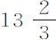
，当气压计中的水银高度为30英寸时，空气与水的比重比值为约1比870，所以空气与水银的比重比值为1比11890。所以，当水银高度为30英寸时，均匀空气的重量应足以把空气压缩到我们所看到的密度，其高度必定等于356700英寸，或29725英尺；这正是我在前一命题作图中称之为A的那个高度。半径为29725英尺的圆其周长为186768英尺。而由于长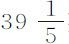
英寸的摆完成一次往复摆动的时间为2秒，这一人所共知的事实意味着长29725英尺，或356700英寸的摆，作一次同样的摆动需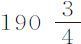
秒。所以，在该时间内，声音可行进186768英尺，因而一秒内传播979英尺。但在此计算中，我没有考虑空气粒子的大小，而它们是即时传播声音的。因为空气的重量比水的重量等于1比870，而盐的密度约为水的2倍；如果设空气粒子的密度与水或盐相同，而空气的稀薄状况系由粒子间隔所致，则一个空气粒子的直径比粒子中心间距约等于1比9或10，而比粒子间距约为1比8或9。所以，根据上述计算，声音在一秒内传播的距离，应在979英尺上再加
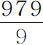
，或约109英尺，以补偿空气粒子体积的作用：则声音在一秒时间行进约1088英尺。此外，空气中飘浮的蒸汽是另一种情形不同的根源，如果要从根本上考虑声音在真实空气中的传播运动，它还很少被计入在内。如果蒸汽保持静止，则声音的传播运动在真实空气中变快，该加快部分正比于物质缺乏的平方根。因而，如果大气中含有十成真正的空气，一成蒸汽，则声运动正比于11比10的平方根加快，或比它在十一成真实空气中的传播非常近似于21比20。所以上面求出的声音运动应加入该比值，这样得出声音在一秒时间里行进1142英尺。
这些情形可以在春天和秋天看到，那时空气由于季节的温暖而稀薄，这使得其弹性力较强。而在冬天，寒冷使空气密集，其弹性力略为减弱，声运动正比于密度的平方根变慢；另一方面，在夏天时则变快。
实验测定的声音在一秒时间内行进1142英尺，或1070法国尺单位。
知道了声音速度，也可以知道其脉冲间隔。M．索维尔 (2) 通过他做的实验发现，一根长约5巴黎尺的开口管子发出的声音，其音调与每秒振动100次的提琴弦的声调相同。所以在声音一秒时间内通过的1070巴黎尺的空间中，有大约100个脉冲；因而一个脉冲占据约
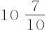
巴黎尺的空间，即约为管长的二倍。由此来看，所有开口管子发出的声音，其脉冲宽度很可能都等于管长的二倍。此外，命题47的推论还解释了声音为什么随着发声物体的停止运动而立即消失，以及为什么在距发声物体很远处听到的声音并不比在近处持续更长久。还有，由前述原理，还使我们易于理解声音是怎样在话筒里得到极大增强的；因为所有的往复运动在返回时都被发声机制所增强。而在管子内部，声音的扩散受到阻碍，其运动衰减较慢，反射较强；因而在每次返回时都得到新的运动的推动而增强。这些都是声音的主要现象。
————————————————————
(1) 即波长。——译者注。
(2) Sauveur, Joseph，英译本误作M．Sauveur（1653—1716），法国物理学家，曾任路易十四宫廷教师，主要从事声学的各种实验研究。本实验当完成于1713年以前，牛顿在本书中对索维尔的结论做了纠正。——译者注。